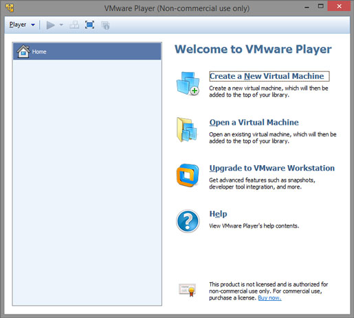
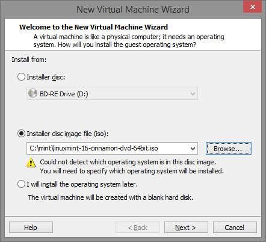
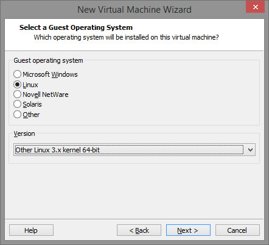
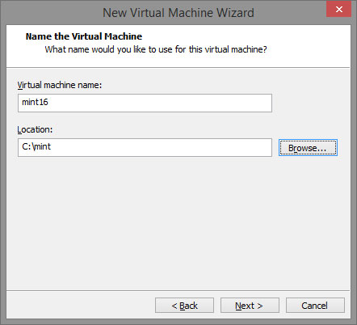
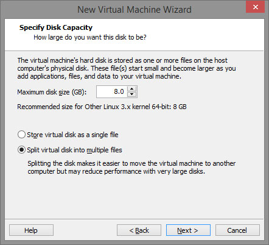
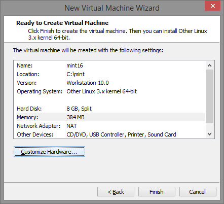
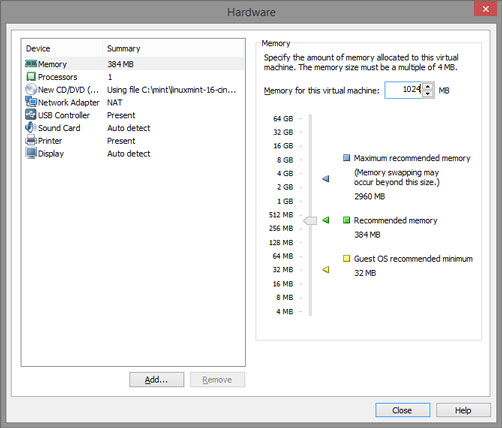
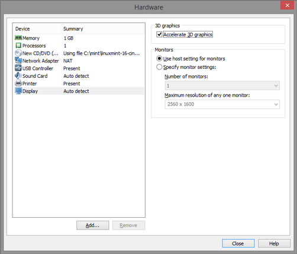

For a while I have been trying to emulate the *nix terminal in Windows 8 using cygwin, but I wanted to get the full experience, so I decided to run Linux Mint in VMware Player. The setup instructions follow.
First of all you need to disable Hyper-V to be able to install VMware Player. To do that run the following command from an elevated command prompt:
dism.exe /Online /Disable-Feature:Microsoft-Hyper-VIn case you need to enable Hyper-V again, the following undoes the changes:
dism.exe /Online /Enable-Feature:Microsoft-Hyper-V /AllNext, install and run VMware Player.
Create a new virtual machine:

Select location of the Linux image, I went for Linux Mint 16 Cinnamon 64-bit:

The version is Linux 3.x kernel 64-bit:

Select where you want to store the virtual machine:

Give it appropriate disk capacity, I gave mine only 8GB at fist, but ran out of it quite quickly (if you resize the capacity later on you will most-likely have to do some disk partitioning):

Before you finish you will want to customize hardware:

Select how much memory you want to use for your VM:

Enable 3D graphics acceleration from the Display settings:

And that’s you ready to roll in Linux.
My screen resolution (1920x1080) was not listed in the display settings, here’s how I fixed it.
Calculate VESA CVT mode lines:
cvt 1920 1080Copy the output starting from after Modeline, and prepend it with
xrandr –newmode, e.g.:xrandr --newmode "1920x1080_60.00" 173.00 1920 2048 2248 2576 1080 1083 1088 1120 -hsync +vsyncand then:
xrandr --addmode Virtual1 "1920x1080_60.00"Switch to console mode using Alt+Ctrl+F1 and log in.
Stop Display Manager:
sudo service mdm stopcreate X configuration file:
sudo X -configureand start it again:
sudo service mdm startSwitch to back to the desktop mode using Alt+Ctrl+F7.